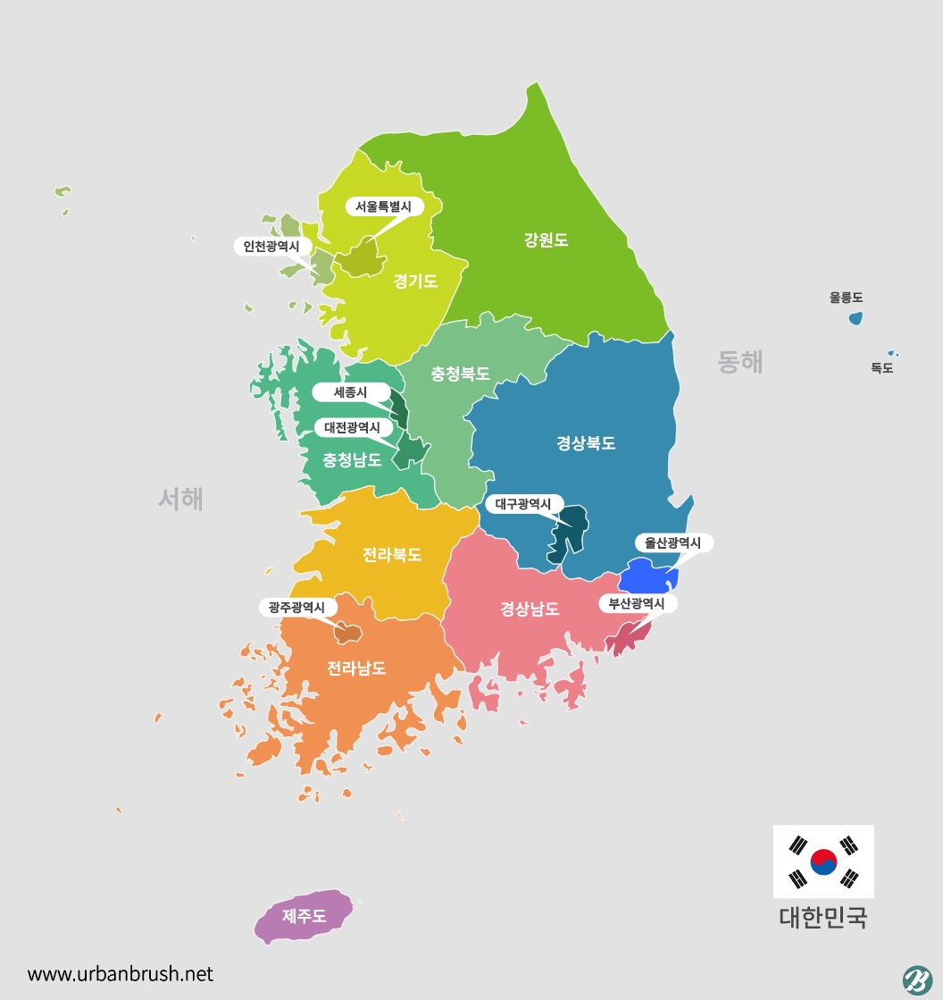

맵 태그
맵 태그는 하나의 이미지에 여러 개의 링크를 걸 수 있다.
이미지상의 클릭 위치에 따라서 서로 다른 링크가 열리도록 한다.
[문제]
한반도 지도를 4등분하여 동 서 남 북 나누어 각 지역을 클릭하면 각 지역정보를 보여주는 페이지로 이동
앵커를 이용하여 하나의 페이지에서 지역정보를 보여주고 각 지역정보에서 다시 메인지도로 돌아오도록 작성

강원도
강원도의 관광지를 소개합니다.
메인메뉴로 이동
경기도
경기도의 관광지를 소개합니다.
메인메뉴로 이동
서울
서울의 관광지를 소개합니다.
메인메뉴로 이동
인천
인천의 관광지를 소개합니다.
메인메뉴로 이동